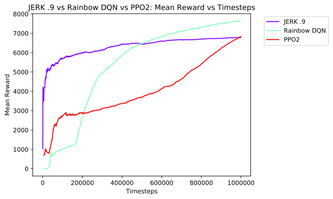

JERK .9 vs Rainbow DQN vs PPO2
Stats
| JERK .9 | Rainbow DQN | PPO2 |
| Number ofEpisodes | 2762 | 1764 | 1142 |
| Reward | Timesteps | Reward | Timesteps | Reward | Timesteps |
| Total | 18717519.15 | 3980163.00 | 13466159.70 | 997577.00 | 7803631.27 | 998668.00 |
| Max | 9877.72 | 4500.00 | 9894.94 | 4500.00 | 9897.61 | 4500.00 |
| Min | 643.13 | 66.00 | 0.00 | 70.00 | 588.11 | 68.00 |
| Mean | 6776.80 | 1441.04 | 7633.88 | 565.52 | 6833.30 | 874.49 |
| Median | 7150.30 | 776.00 | 9862.53 | 550.00 | 9414.08 | 489.00 |
| Std Dev | 2956.08 | 1489.57 | 3438.16 | 589.79 | 3291.69 | 1184.38 |
| Variance | 8738426.35 | 2218809.71 | 11820924.32 | 347853.40 | 10835222.42 | 1402766.47 |
Graphs
